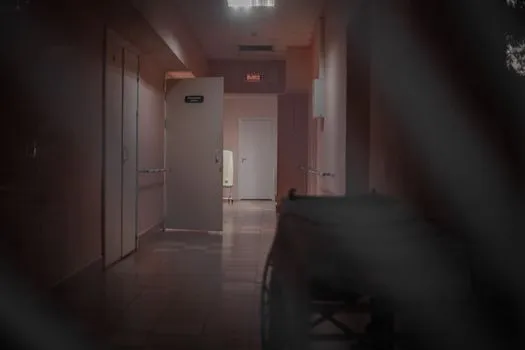
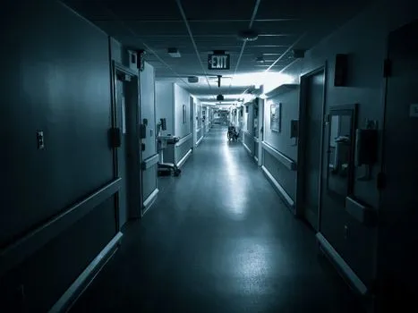
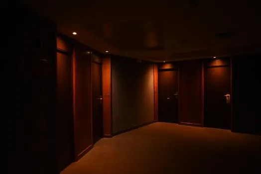
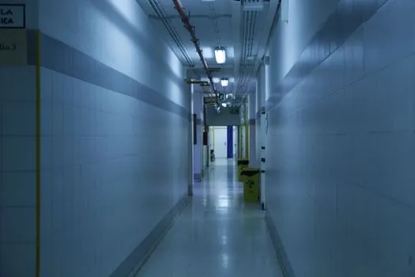

8673896A deserted hospital corridor with open doors and dim lighting, enhancing a mysterious ambiance.

8673896A deserted hospital corridor with open doors and dim lighting, enhancing a mysterious ambiance.

4094199Black and white poorly lit empty wide corridor of hospital with doors on both sides and exit sign on ceiling

15801268A dark, quiet hotel corridor featuring multiple closed wooden doors and soft lighting.

5894937A deserted, dimly lit hallway with tiled walls and overhead lights.